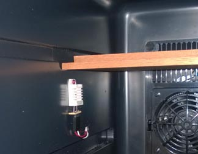

For my humidor I used a Haier 8 bottle wine cooler You can pick one up for $91 on Amazon delivered. These small electric coolers are perfect sized, maintain temperature extremely well.
Maintaining temperature is important, not just to keep cigar beetles from hatching, but also necessary for keeping humidty nice and level since the two are tightly intertwined. The Haier coolers also seal up tight to hold in the moisture. I already have a years worth of data you can look through to prove how well they do.
With these coolers it is also easy to modify the temperature control system so they default to 70 degrees.
Inside, I built some racks using spanish cedar and hot glue. This gives me some basic shelves and I used old cigar boxes as containers. I also put some kitchen drawer handles on the boxes to make pulling them out easier.
For humidification I use 5 of the large 64g Boveda 72% humidity packs. One set has lasted me about 6mos and provide maintence free service for this entire time without the humidity swings associated with manually humidifying beads. I was reluctant to try them, but honestly they are a hands down winner for me over beads.
The temperature/humidity sensor is attached to the inside wall of the cooler with a small screw. I ran the wires directly through the side of the cooler with a small hole, then plugged it with hot glue.

I have no idea where the wires in the cooler run, the side wall seemed like a safe place. A cleaner installer would go through the back wall to hide the wires, or you could take out the cooling element and run the wires through the seal. I took a vinotemp apart once and the wires were just embedded in the foam without a whole lot of control of where they went. Your milage may vary.